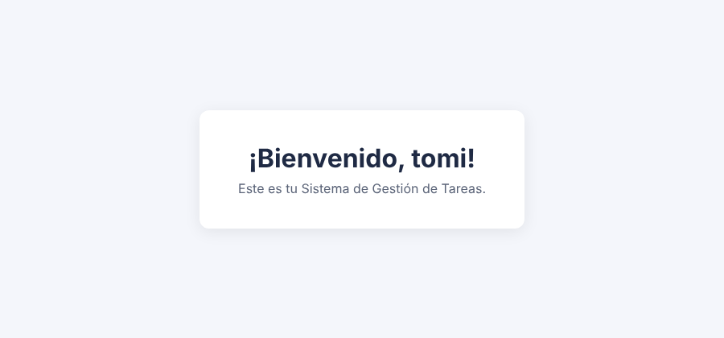
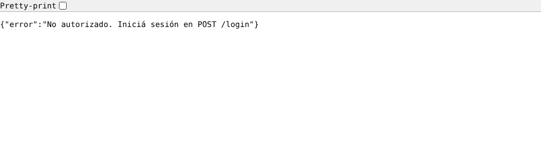
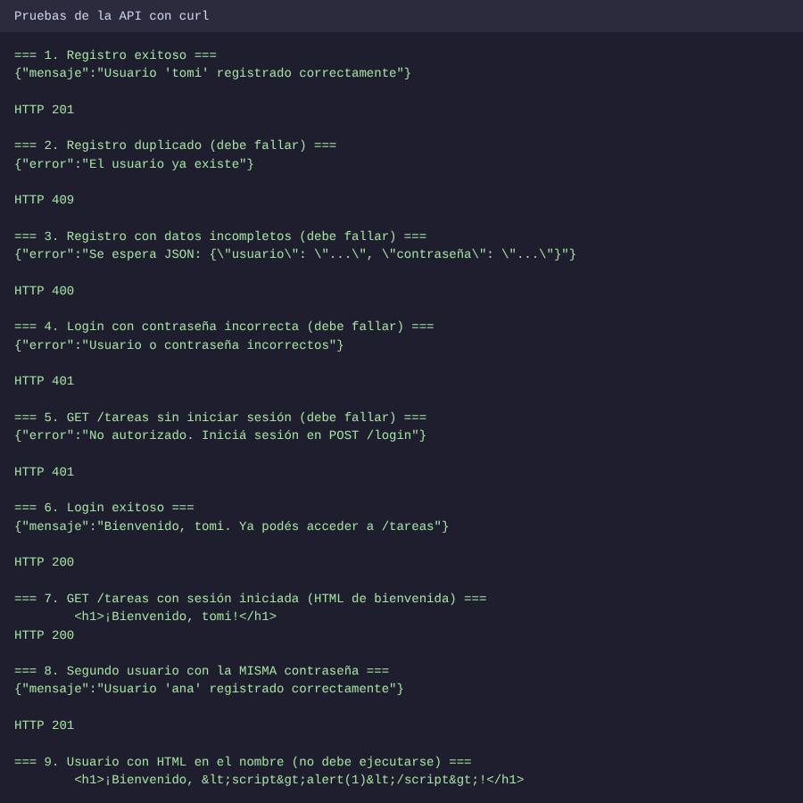
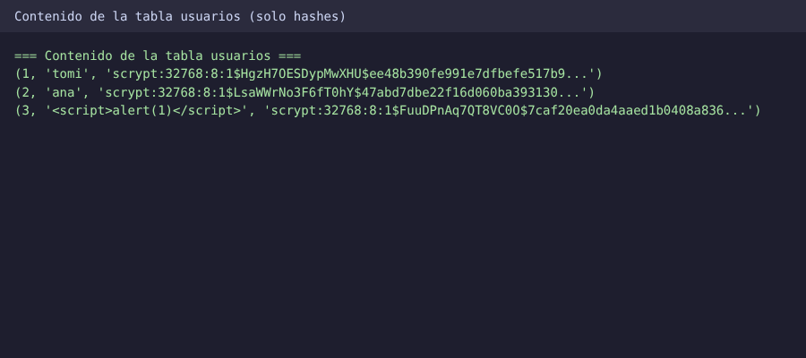

Sobre este sitio
Este sitio está publicado con GitHub Pages, que solo sirve contenido estático. Por eso acá se muestra la documentación, las capturas y las respuestas conceptuales; la API de Flask se ejecuta de forma local con los pasos de más abajo.
Cómo ejecutarlo
pip install -r requirements.txt
python3 servidor.py
# El servidor queda en http://127.0.0.1:5000La base tareas.db se crea sola la primera vez. El código fuente está en servidor.py y las instrucciones completas de prueba, en el README.md del repositorio.
Endpoints
| Método | Ruta | Descripción | Respuestas |
|---|---|---|---|
| POST | /registro |
Recibe {"usuario": "...", "contraseña": "..."} y guarda al usuario con la contraseña hasheada. |
201 400 409 |
| POST | /login |
Verifica las credenciales e inicia la sesión. | 200 400 401 |
| GET | /tareas |
Muestra un HTML de bienvenida. Requiere haber iniciado sesión. | 200 401 |
Capturas de pruebas exitosas

GET /tareas con sesión iniciada: devuelve el HTML de bienvenida.
GET /tareas sin sesión: acceso denegado (401).

usuarios guarda solo hashes. tomi y ana tienen la misma contraseña pero hashes distintos, gracias a la sal aleatoria.Respuestas conceptuales
¿Por qué hashear contraseñas?
Si las contraseñas se guardaran en texto plano, cualquiera que accediera a la base de datos (por una filtración, un backup mal protegido o un administrador curioso) vería todas las contraseñas tal cual. Como mucha gente reutiliza la misma contraseña en varios servicios, el daño se extendería a sus otras cuentas.
Un hash es una función de un solo sentido: de la contraseña se obtiene una huella, pero de la huella no se puede recuperar la contraseña. Al iniciar sesión se calcula el hash de lo que escribió el usuario y se compara con el guardado.
- Sal aleatoria: un valor único por usuario que se mezcla antes de hashear. Dos usuarios con la misma contraseña tienen hashes distintos y se anulan las tablas precalculadas.
- Algoritmo lento a propósito (scrypt, bcrypt, PBKDF2): hace muy costoso probar millones de combinaciones, a diferencia de hashes rápidos como MD5 o SHA-1.
Hashear no es cifrar: el cifrado se revierte con la clave; el hash no está pensado para revertirse.
Ventajas de usar SQLite en este proyecto
- Sin servidor: es una librería que lee y escribe un único archivo; no hay nada que instalar ni configurar aparte.
- Incluido en Python:
sqlite3es parte de la librería estándar, así que no suma dependencias. - Portable: toda la base es un archivo que se copia, respalda o borra para empezar de cero.
- Transacciones ACID y restricciones como
UNIQUE, que evitan usuarios duplicados. - SQL estándar: lo aprendido se traslada a PostgreSQL o MySQL.